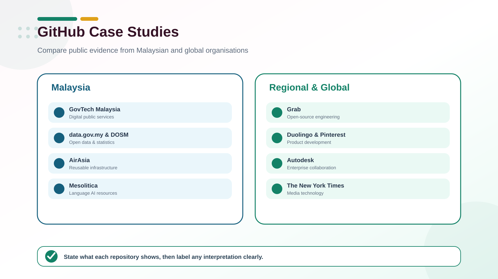

GitHub is more than code storage
Public repositories reveal practices such as documentation, issue tracking, reusable infrastructure, open data and community contribution. They do not reveal an organisation’s entire internal engineering process, so distinguish direct evidence from your interpretation.

Learning outcomes
- Identify observable GitHub practices in real organisations.
- Compare public-sector, technology and product-company use cases.
- Connect repository practices with data engineering principles.
- Write a concise case study supported by public evidence.
Malaysia: public repositories to investigate
| Organisation | Public evidence | Questions for students |
|---|---|---|
| GovTech Malaysia | Public digital-service projects including MyGov Portal, Kementerian Digital portal, MYDS and GoGovMY. | How do README files, licences and contribution records support transparent digital services? |
| data.gov.my | Repositories connected with Malaysia’s open-data platform and data products. | How are datasets, APIs, code and documentation connected? |
| Department of Statistics Malaysia | Public work related to OpenDOSM and official statistics. | What practices make statistical data discoverable and reusable? |
| AirAsia | Public infrastructure modules and engineering utilities, including cloud resources. | Why would a company publish reusable infrastructure code? |
| Mesolitica | Open Malaysian language, AI and machine-learning projects. | How do models, datasets, examples and documentation enable reuse? |
These observations are limited to public repositories. Do not infer confidential systems, internal policies or total organisational adoption from public activity alone.
Regional and global comparisons
| Organisation | Focus for the case study | Starting point |
|---|---|---|
| Grab | Open-source engineering, technical documentation and knowledge sharing in a Southeast Asian technology company. | Public GitHub organisation |
| Duolingo | Developer productivity and the use of GitHub’s development platform. | GitHub customer stories |
| Collaboration and software delivery at product scale. | Official customer story | |
| Autodesk | Enterprise collaboration and modern development workflows. | Official customer story |
| The New York Times | How a media organisation supports technology and product development. | Official customer story |
Comparison lens
| Lens | Evidence to collect | Data engineering connection |
|---|---|---|
| Purpose | Repository description, users and stated problem | Value delivered by the data product |
| Reproducibility | Setup instructions, dependencies, examples and releases | Reliable repeatable pipelines |
| Collaboration | Issues, pull requests, contributors and guidelines | Team ownership and controlled change |
| Quality | Tests, automated checks, versioning and documentation | Trustworthy data and software |
| Governance | Licence, security policy, code of conduct and provenance | Responsible access, use and accountability |
Case study activity
Select two contrasting cases
Choose one Malaysian organisation and one regional or global organisation.
Collect direct evidence
Use the organisation profile, one repository, its README and visible collaboration artefacts. Record links and the access date.
Analyse, do not advertise
Explain the problem, observable practice, benefit, limitation and one lesson for a student data-engineering project.
Separate fact from inference
Use phrases such as “the public repository shows” for evidence and “this suggests” for your interpretation.
Case study file
Create topic-02/github-case-study.md with the following sections:
# GitHub Case Study
## Cases selected
- Malaysia: organisation and repository URL
- Comparison: organisation and source URL
## Public evidence
What is directly visible? Include links.
## Comparison
Purpose, collaboration, reproducibility, quality and governance.
## Data engineering lesson
One practice I will apply to my own repository.
## Limitations
What cannot be concluded from public evidence?Strong analysis: A good case study links every important claim to visible evidence and clearly labels interpretation.